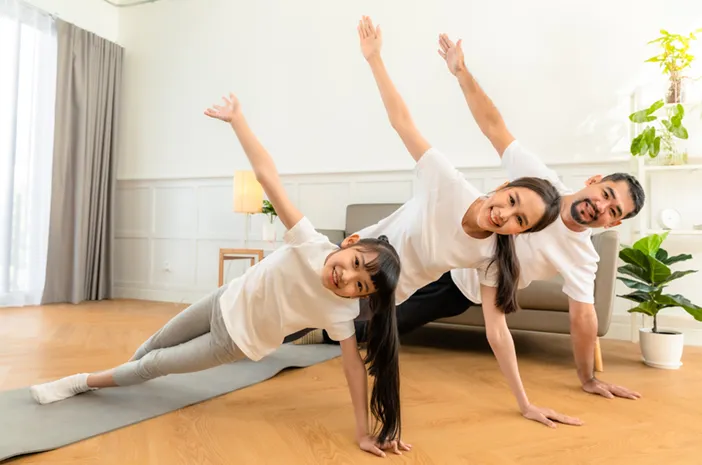
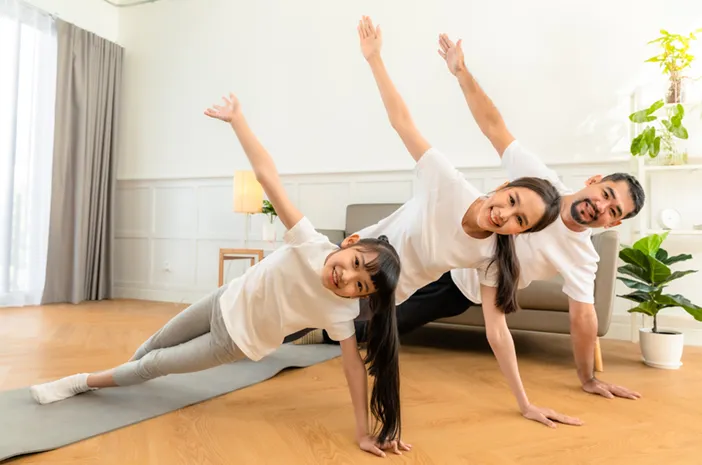

DO'S, yang harus dilakukan untuk memiliki pola hidup yang sehat. ✅
Menerapkan pola hidup sehat bukan hanya tentang menghindari penyakit, tetapi juga tentang menjaga
keseimbangan tubuh dan pikiran agar tetap optimal. Berikut adalah beberapa hal yang harus dilakukan
untuk memiliki pola hidup yang sehat:
- Konsumsi Makanan Bergizi Seimbang
- Pastikan tubuh mendapatkan asupan nutrisi yang cukup dengan mengonsumsi makanan yang kaya akan
protein, serat, vitamin, dan mineral. Pilih makanan alami seperti sayur-sayuran, buah-buahan,
biji-bijian, serta sumber protein sehat seperti ikan, ayam tanpa kulit, dan kacang-kacangan.
Menghindari makanan olahan dan berlebihan dalam mengkonsumsi gula serta garam dapat membantu
menjaga kesehatan tubuh dalam jangka panjang.
- Minum Air Putih yang Cukup
- Hidrasi sangat penting bagi kesehatan tubuh. Pastikan Anda minum minimal 8 gelas air putih
sehari untuk menjaga keseimbangan cairan tubuh, membantu pencernaan, serta meningkatkan energi
dan konsentrasi. Kurang minum air dapat menyebabkan dehidrasi, yang bisa berdampak pada
kesehatan kulit, fungsi ginjal, dan sistem pencernaan.
- Rutin Berolahraga
- Aktivitas fisik sangat penting untuk menjaga kebugaran tubuh. Luangkan waktu setidaknya 30 menit
sehari untuk berolahraga, seperti berjalan kaki, berlari, bersepeda, atau melakukan olahraga
ringan di rumah. Olahraga tidak hanya membantu menjaga berat badan ideal tetapi juga
meningkatkan sistem kekebalan tubuh dan kesehatan mental.
- Tidur yang Cukup dan Berkualitas
- Kurangnya waktu tidur dapat berdampak buruk pada kesehatan fisik dan mental. Pastikan Anda tidur
selama 7–9 jam setiap malam agar tubuh memiliki waktu yang cukup untuk beristirahat dan
memperbaiki sel-sel yang rusak. Tidur yang cukup juga berperan penting dalam meningkatkan daya
tahan tubuh, konsentrasi, serta mood sepanjang hari.
- Kelola Stres dengan Baik
- Stres yang tidak dikelola dengan baik dapat berdampak buruk pada kesehatan tubuh, termasuk
meningkatkan risiko tekanan darah tinggi dan gangguan tidur. Luangkan waktu untuk melakukan
aktivitas yang dapat mengurangi stres, seperti meditasi, yoga, mendengarkan musik, atau
menghabiskan waktu dengan keluarga dan teman. Menyalurkan hobi juga bisa menjadi cara efektif
untuk mengelola stres dengan lebih baik.
- Jaga Kebersihan Diri dan Lingkungan
- Menjaga kebersihan diri adalah langkah penting untuk mencegah berbagai penyakit. Biasakan
mencuci tangan sebelum makan dan setelah dari luar rumah, mandi secara rutin, serta menjaga
kebersihan lingkungan sekitar. Rumah yang bersih dan rapi juga dapat menciptakan suasana yang
lebih nyaman dan sehat.
- Lakukan Pemeriksaan Kesehatan Secara Rutin
- Mencegah lebih baik daripada mengobati. Jangan menunggu hingga sakit untuk memeriksakan diri ke
dokter. Lakukan medical check-up secara berkala untuk memastikan kondisi tubuh tetap sehat dan
mendeteksi penyakit sejak dini sebelum berkembang menjadi lebih serius.

.jpeg) 
